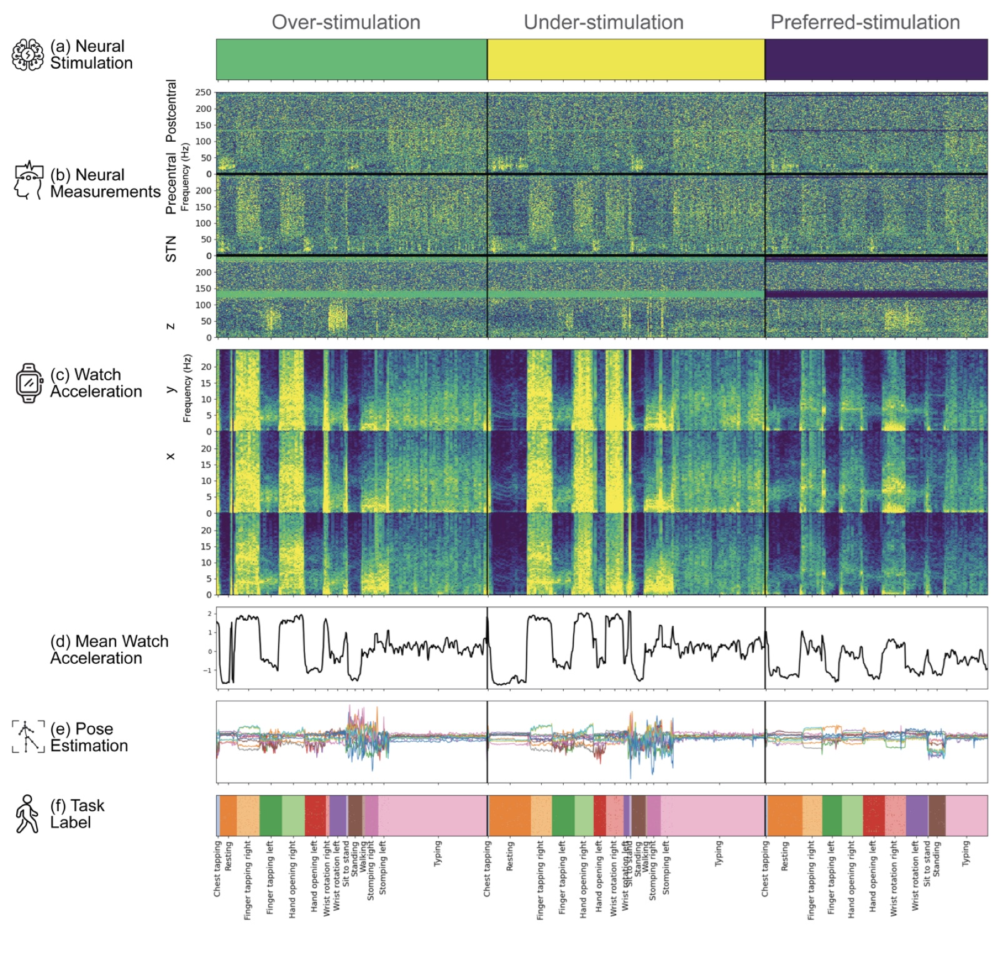
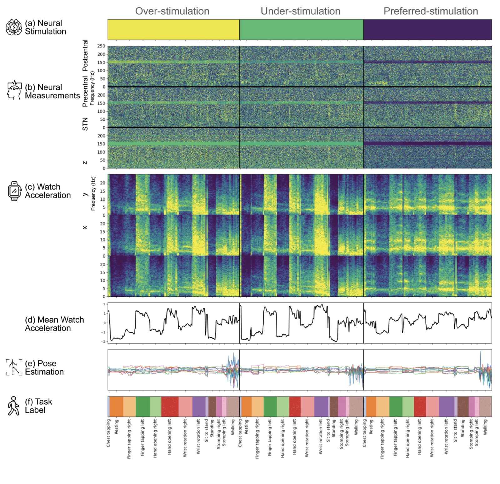
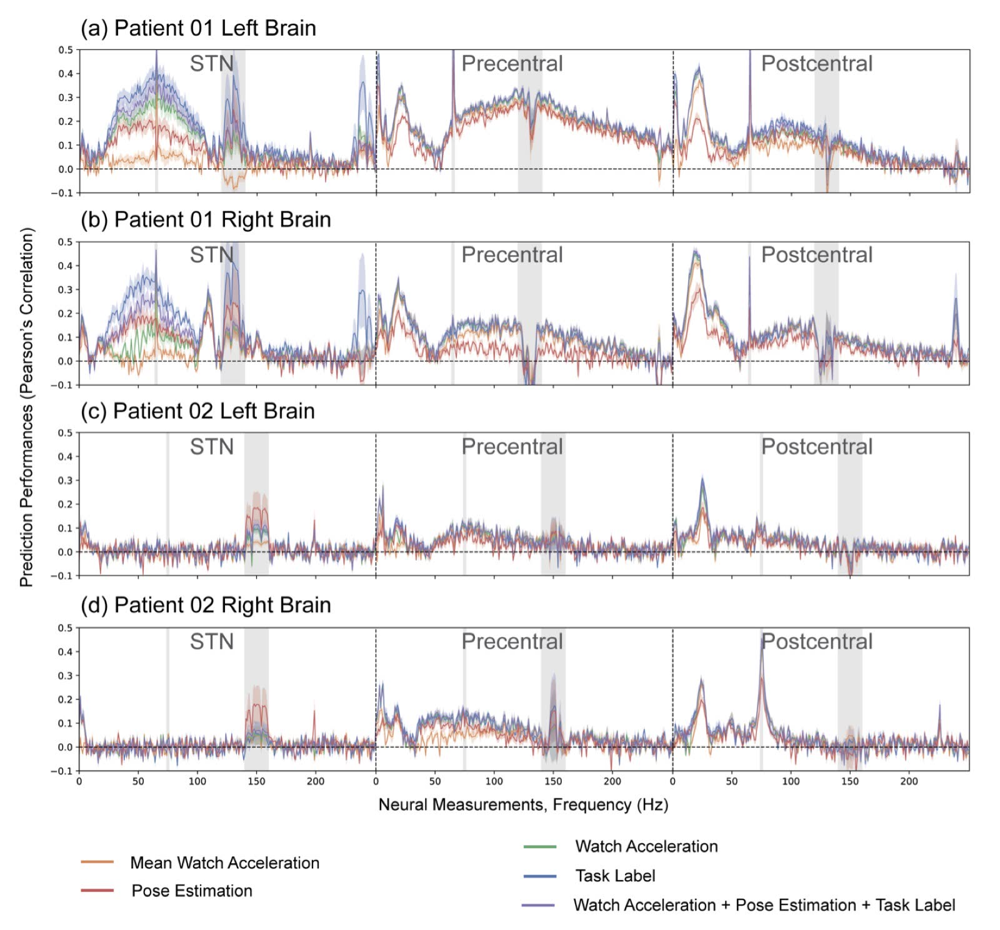
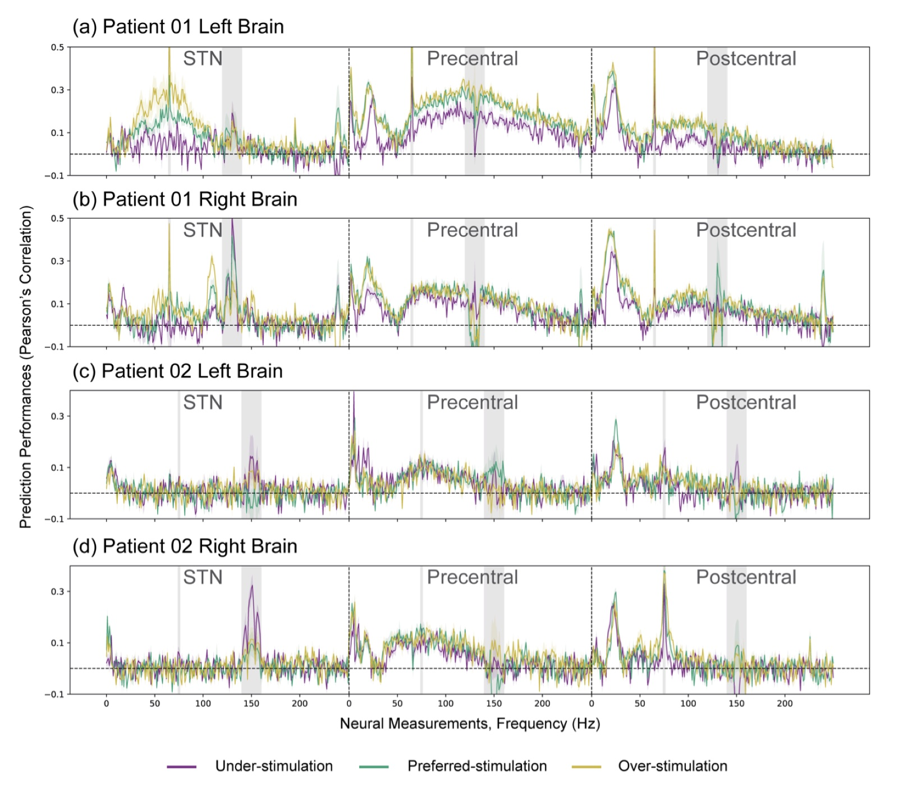
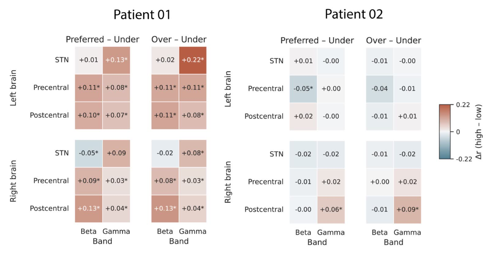
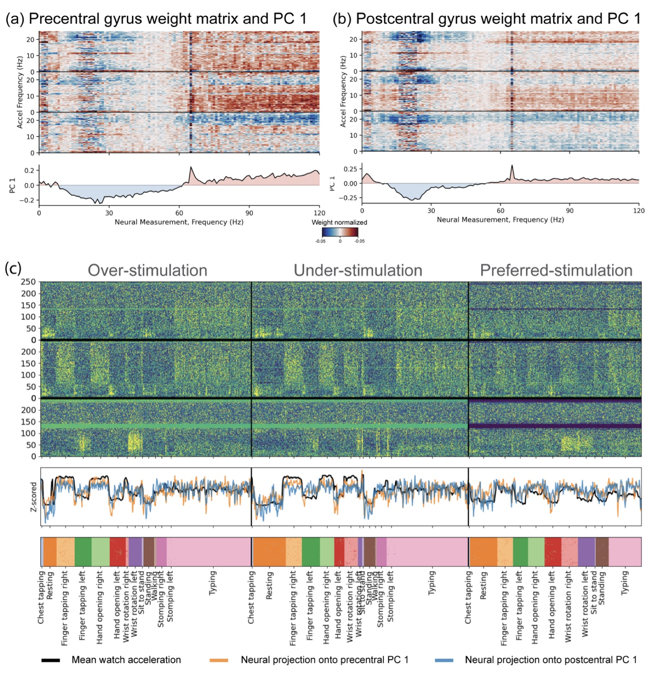

Deep Brain Stimulation Amplifies Movement-Related Neural Modulation in Parkinson’s Disease: Evidence from Multimodal Home Recordings
{kind=link}

Deep brain stimulation (DBS) for Parkinson’s disease (PD) is a prime example: more than two decades after its introduction, DBS remains an open-loop therapy.
The text below is the study in its own words, from Chapter 3 of the thesis; the figures are the chapter’s.
Abstract
Parkinson’s disease (PD) is a dynamical disease: motor symptoms arise not from static lesions but from aberrant neural activity across basal ganglia and sensorimotor cortex. Deep brain stimulation (DBS) is effective but remains open-loop, with parameters tuned heuristically. Here we use a home-deployed multimodal platform to quantify how DBS amplitude modulates movement-related neural activity. Two participants implanted with bidirectional neurostimulators (Medtronic Summit RC+S) completed six recording days at home, performing a UPDRS-derived motor battery at three stimulation amplitudes (under-, preferred-, and over-stimulation). We recorded local field potentials from subthalamic nucleus and electrocorticography from precentral and postcentral gyri, alongside bilateral wrist accelerometry and video data for pose estimation. Encoding models predicted neural spectral power from behavioral features: mean acceleration, full acceleration spectrogram, task labels, pose kinematics, and a combined set. Across participants, hemispheres, and recording sites, behavioral features robustly predicted neural activity; temporally rich representations—full acceleration spectrogram and task labels—substantially outperformed coarse summaries, indicating that fine-grained movement structure is necessary for capturing behaviorally driven neural variance. In the participant with stronger model performance, higher stimulation amplitudes enhanced prediction throughout the sensorimotor network by amplifying a movement-locked spectral component characterized by beta suppression and gamma enhancement. This pattern aligns with “information lesion” accounts of DBS in which stimulation restores movement-related signaling through pathologically synchronized circuits, and provides an empirical basis for adaptive neuromodulation informed by behavioral state.
Introduction
Real-time feedback control is routine in many complex engineered systems, from aircraft autopilots to biomedical devices such as rate-adaptive cardiac pacemakers and closed-loop insulin pumps. Comparable closed-loop control has not yet been achieved for neurological disease. Deep brain stimulation (DBS) for Parkinson’s disease (PD) is a prime example: more than two decades after its introduction, DBS remains an open-loop therapy. Standard clinical practice relies on fixed, high-frequency monopolar pulse trains delivered to basal ganglia targets via an implanted pulse generator, with stimulation parameters tuned heuristically based on clinician experience rather than derived from explicit models of neural dynamics or behavioral state (Schiff, 2010; Gorzelic et al., 2013; Koeglsperger et al., 2019).
A central factor limiting progress toward principled, adaptive DBS is the dynamical complexity of the underlying disease. PD has been characterized as a “dynamical disease” because motor symptoms arise from aberrant activity patterns within distributed neuronal networks rather than from static lesions (Beuter and Vasilakos, 1995). The relevant system includes nonlinear interactions among basal ganglia, motor cortex, cerebellum, and brain stem circuits, all driven by continuously changing sensory, motor, and environmental context (Brown, 2003; McGregor and Nelson, 2019; Grill et al., 2004; Shenoy et al., 2013; Caligiore et al., 2016). Therapeutic optimization therefore demands both a systems-level understanding of disease mechanisms and computational models capable of capturing time-varying, nonlinear brain–behavior dynamics.
Only recently has the requisite technology matured. Bidirectional neurostimulators such as the investigational Medtronic Summit RC+S can now deliver therapeutic stimulation while simultaneously recording local field potentials chronically in freely moving patients (Stanslaski et al., 2018; Starr, 2018). In parallel, wearable inertial sensors and camera-based pose estimation enable dense, time-resolved behavioral measurement in naturalistic settings (Deng et al., 2024; Strandquist et al., 2023). Together, these advances establish the technical foundation for integrating multimodal, high-volume data streams into interpretable models of brain–behavior relationships.
The present study leverages a multimodal data-collection platform developed by the Gallant Lab in collaboration with UCSF and the University of Washington that combines an implanted Summit RC+S neurostimulator with wrist-worn accelerometers and home-deployed video cameras (Strandquist et al., 2023; Dixon et al., 2025). Two participants completed six recording days at home, performing a fixed battery of motor tasks at three monopolar stimulation amplitudes spanning under-, preferred-, and over-stimulation states. Within this framework, encoding models were used to predict neural spectral activity from behavioral features. Prediction performance was compared systematically across feature sets (mean acceleration, full acceleration spectrogram, task labels, and pose kinematics) and stimulation conditions.
This design introduces several methodological advances. First, rather than contrasting gross movement against rest at a single stimulation setting, we sample a range of semi-naturalistic motor states across multiple stimulation amplitudes. This design addresses two questions: which aspects of movement are encoded in which frequency bands, and how stimulation modulates the fidelity of this encoding. Second, we collect high-volume, within-individual datasets and evaluate models using modern cross-validated pipelines on held-out data from the same individual. This reduces the risk of inflated type I error from group-level averaging and preserves meaningful individual differences. Third, data collection occurs primarily in the home environment, with remote monitoring and secure data transfer after an initial in-person setup. This demonstrates the feasibility of studying complex stimulation–movement interactions under everyday conditions.
Three main findings emerge. First, behavioral features robustly predict neural spectral power across a broad frequency range in STN, precentral gyrus, and postcentral gyrus. Features with richer temporal and categorical structure—particularly full acceleration spectrogram and task labels—explain substantially more variance than coarse summaries such as mean acceleration, indicating that fine-grained movement structure is necessary for capturing behaviorally driven neural variance. Second, in the participant with stronger prediction performance, preferred- and over-stimulation markedly enhance prediction performance throughout STN and sensorimotor cortex. This effect is evident in both hemispheres, each driven by an independent neurostimulator and modeled separately. Third, this enhancement reflects amplification of a movement-locked spectral component spanning beta, gamma, and alpha/delta bands, including a prominent peak at stimulation-entrained gamma. This stimulation-dependent amplification of movement-related neural modulation accords with “information lesion” accounts of how DBS reshapes pathological dynamics and, to our knowledge, has not previously been demonstrated in chronic human recordings.
Background
Parkinson’s Disease and Deep Brain Stimulation
PD is the second most prevalent neurodegenerative disorder worldwide, affecting more than 10 million people (Ou et al., 2021). It is characterized by the progressive loss of dopaminergic neurons in the substantia nigra pars compacta, leading to substantial dopamine depletion in the striatum. This depletion disrupts the balance between the direct and indirect motor pathways of the basal ganglia (Albin et al., 1989; McGregor and Nelson, 2019) and produces the core motor symptoms of PD: akinesia, rigidity, and tremor. As the disease progresses, patients often develop gait and postural instability, cognitive impairment, and affective disturbances (Poewe et al., 2017).
The primary treatment for PD is pharmacological. Most patients initially receive dopamine replacement therapy, such as carbidopa–levodopa, or dopamine receptor agonists, such as pramipexole. These medications are often highly effective in the early stages of the disease. Over time, however, many patients develop symptoms that are refractory to pharmacological management. Common complications include levodopa-induced dyskinesias and motor “on–off” fluctuations, in which periods of good motor control alternate with periods of severe motor impairment (Thanvi et al., 2007; Connolly and Lang, 2014). When these complications can no longer be managed by medication adjustments alone, patients are often evaluated for neurosurgical intervention.
DBS was first demonstrated as an effective treatment for PD by Alim-Louis Benabid and colleagues in the late 1980s. Their work demonstrated that high-frequency stimulation could reproduce many of the benefits of prior treatments like ablative surgery while remaining reversible and adjustable (Williams, 2010). DBS has since become a standard therapy for advanced PD (Lozano et al., 2019). In current practice, DBS delivers high-frequency (typically 100–200 Hz) electrical pulses through implanted electrodes targeting basal ganglia nuclei such as the subthalamic nucleus or the internal segment of the globus pallidus. Clinical trials and long-term follow-up studies have confirmed that DBS can improve tremor, rigidity, and bradykinesia, reduce motor fluctuations and dyskinesias, and enhance quality of life.
Hypothetical Mechanisms of DBS
Despite widespread clinical use, the mechanisms by which DBS produces therapeutic benefit remain incompletely understood. Several hypotheses have been proposed, differing in emphasis but broadly complementary (Lozano et al., 2019; Ashkan et al., 2017).
Classic Rate Model The earliest explanatory framework for DBS was the inhibition hypothesis, grounded in the classic rate model of basal ganglia function. In PD, degeneration of dopaminergic neurons in the substantia nigra pars compacta leads to elevated firing rates in the subthalamic nucleus (STN) and internal segment of the globus pallidus (GPi). According to the rate model, this hyperactivity strengthens inhibition of thalamic relay nuclei, reduces excitatory drive to motor cortex, and thereby contributes to akinesia and rigidity. Within this framework, high-frequency DBS was thought to act as a “functional lesion”—suppressing pathological hyperactivity in the target nucleus, relieving excessive downstream inhibition, and restoring more normal thalamocortical output. This hypothesis aligned with observations that DBS produced effects similar to anatomical lesioning (Albin et al., 1989; DeLong, 1990; Bergman et al., 1990). Subsequent electrophysiological studies, however, indicated that this account is incomplete. High-frequency stimulation of STN or GPi does not consistently silence local neurons; somatic firing can instead increase during stimulation and become entrained to the pulse train (Hashimoto et al., 2003; Ashkan et al., 2017). These findings contradict the simple inhibition hypothesis and support an alternative view in which DBS reshapes firing patterns and information flow across the network.
Disruption and Replacement of Pathological Oscillations A second major hypothesis emphasizes abnormal oscillations and synchrony in PD. Local field potential and single-unit recordings in both humans and animal models display elevated beta-band power (∼13–35 Hz), increased bursting, and abnormal synchronization throughout cortico–basal ganglia circuits (Yu et al., 2021; Stein and Bar-Gad, 2013; Little et al., 2012; Pogosyan et al., 2010). In healthy subjects, beta oscillations are associated with maintaining the current motor state. When beta synchrony becomes excessive and persistent, it is thought to hinder movement initiation and contribute to bradykinesia and rigidity (Leventhal et al., 2012; Brittain and Brown, 2014; Khanna and Carmena, 2017; Brown, 2003). Within this framework, DBS acts primarily by disrupting or replacing pathological beta oscillations and coherent firing patterns. High-frequency stimulation reduces beta power and desynchronizes abnormally coupled nuclei, promoting a more flexible, less synchronized regime that better supports voluntary movement. This network-level regularization of activity is sometimes described as an “informational lesion.” (Grill et al., 2004; Rubin and Terman, 2004; Spooner et al., 2024)
Multiscale Neuromodulation and Plasticity More recent perspectives characterize DBS as multiscale neuromodulation, engaging distinct mechanisms across spatial and temporal scales (Neumann et al., 2023; Ashkan et al., 2017). A key observation motivating this view is that different symptom categories improve on distinct timelines. Tremor and rigidity can resolve within seconds to minutes of stimulation onset, consistent with rapid changes in spike timing and local field potentials. Bradykinesia often improves over tens of minutes to hours, suggesting slower network reconfiguration or neuromodulatory processes. When DBS is applied to psychiatric indications such as obsessive–compulsive disorder or depression, clinically meaningful changes typically emerge only after weeks to months, implicating longer-term plasticity. Under this framework, DBS does not operate through a single mechanism but rather engages multiple physiological processes across different timescales and distributed brain circuits (Ashkan et al., 2017).
Limitations of Current DBS and Directions for Improvement
DBS is effective for PD but does not provide complete relief and can produce substantial side effects. Many patients continue to experience gait impairment, speech difficulties, mood changes, or dyskinesias even under “optimized” settings. Long-term stimulation also entails ongoing device maintenance and regular recharging. These limitations stem from two features of current practice: how stimulation is programmed and how it is delivered over time. Accordingly, two complementary improvement strategies have emerged: refining how stimulation is delivered and refining when it is delivered. Both aim to increase efficacy, reduce side effects, and move DBS toward more precise, individualized neuromodulation.
Refining How Stimulation Is Delivered The first strategy targets the structure and spatial targeting of stimulation within a high-dimensional parameter space. Modern DBS systems permit adjustment of contact configuration, polarity, amplitude, frequency, and pulse width, yet routine clinical practice explores only a small subset of this space. Standard programming relies on regular high-frequency pulse trains near 130 Hz, short pulse widths (typically 60–90 µs), and amplitudes of 1–4 V (or mA), delivered through one or a few contacts surrounding the target nucleus. These conventional settings cover only a narrow slice of the possible stimulation space.
A major reason for this underutilization is the manual, heuristic nature of parameter selection. Parameters are tuned through iterative clinical testing without widely adopted data-driven protocols. Optimization thus remains a time-consuming trial-and-error process that depends heavily on clinician experience and requires repeated in-person visits—particularly burdensome for patients far from specialized centers. These constraints underscore the need for systematic, data-driven exploration of the parameter space guided by objective neural and behavioral measures (Koeglsperger et al., 2019).
Refining When Stimulation Is Delivered The second strategy entails closing the loop between neural or behavioral state and stimulation output. Conventional DBS (cDBS) delivers stimulation continuously with fixed parameters, regardless of fluctuations in neural activity, medication state, or symptoms. This “always-on” approach often mismatches stimulation to momentary clinical needs: periods of relative wellness receive as much stimulation as periods of severe impairment. Continuous delivery can exacerbate stimulation-induced side effects and accelerate battery depletion.
Adaptive DBS (aDBS) addresses these limitations by adjusting stimulation in real time based on feedback signals reflecting symptom severity or network state. Stimulation parameters are modulated according to neural biomarkers (for example, STN beta power, stimulation-entrained gamma) and/or behavioral measures (for example, accelerometer-derived kinematics). Rather than delivering constant output, aDBS increases stimulation when biomarkers indicate worsening symptoms and decreases or suspends it when the patient’s state is relatively stable. Multiple studies have demonstrated that aDBS can match or exceed the motor benefits of cDBS while reducing total stimulation time, energy delivered, and side effects (Little et al., 2016; Oehrn et al., 2024).
Neural Biomarkers for Parkinson’s Disease
A central goal in PD research is to identify biomarkers that index symptom state in real time. Such markers are essential for data-driven selection of stimulation parameters and for adaptive DBS. This requires signals, neural or behavioral, that reliably track pathological circuit dynamics. Most work has focused on neural signals recorded directly from implanted DBS electrodes, which are continuously available and provide a direct window onto activity at the stimulation target (Little and Brown, 2012, 2014).
The most established biomarker is beta-band oscillatory activity (∼13–30 Hz) in the basal ganglia (Little and Brown, 2014). Beta power in STN rises during bradykinesia and rigidity and falls following dopaminergic medication or DBS onset (Khanna and Carmena, 2015; Yu et al., 2021; Stein and Bar-Gad, 2013; Little et al., 2012; Pogosyan et al., 2010). Because these fluctuations parallel clinical state, beta power is a natural candidate for feedback control. Adaptive paradigms that trigger stimulation when beta power exceeds a threshold have demonstrated that motor symptoms can be controlled—and in some cases more effectively—while delivering substantially less total stimulation than conventional continuous DBS (Little et al., 2016).
A second, more recently characterized biomarker is stimulation-entrained gamma. In the absence of stimulation, narrowband gamma oscillations emerge in STN and motor cortex during high-dopamine states. During active DBS, the pulse train can entrain this rhythm to a subharmonic of the stimulation frequency, typically in a 1:2 ratio (e.g., ∼65 Hz gamma during 130 Hz stimulation) (Sermon et al., 2023; Olaru et al., 2025). Entrained gamma amplitude covaries with medication state and motor function, positioning it as another candidate for closed-loop control (Olaru et al., 2024; Mathiopoulou et al., 2025). Adaptive strategies using entrained gamma as the feedback signal have achieved improved management of motor fluctuations and dyskinesias relative to continuous stimulation (Oehrn et al., 2024).
Bidirectional Implantable Neurostimulators
Systematic, data-driven optimization of DBS requires dense neural recordings paired with objective measures of behavioral state. Much current understanding of PD derives from recordings obtained via externalized cortical or subcortical leads, either during implantation or in the immediate postoperative period. These data are invaluable because they offer high signal-to-noise ratio and excellent spatiotemporal resolution compared with noninvasive methods. However, they are inherently limited: recordings are brief, typically acquired at rest or during simple movements, and collected in an artificial hospital setting where neural activity is likely altered by recent surgery (Starr, 2018).
These constraints motivated development of fully implanted devices capable of both stimulating and sensing neural activity chronically under naturalistic conditions. Such bidirectional interfaces integrate recording and stimulation within a single implant, enabling long-term monitoring of neural dynamics across everyday contexts and stimulation states. The investigational Summit RC+S system (Medtronic) was designed for this purpose (Stanslaski et al., 2018; Gilron et al., 2021). It incorporates hardware and firmware features that facilitate sensing by reducing stimulation artifacts during active stimulation, including configurable blanking windows around each pulse and an active-recharge mode that shortens the recovery phase. The device streams neural data wirelessly to an external tablet while patients move freely, supporting multi-day recordings during naturalistic behavior (Stanslaski et al., 2018; Ansó et al., 2022). The present study leverages this bidirectional platform to characterize how stimulation amplitude, neural oscillations, and movement interact under real-world conditions.
Methods
Experimental Design
Two participants with Parkinson’s disease were recruited from an adaptive DBS trial at the University of California, San Francisco (UCSF) approved by the Institutional Review Board (IRB) and conducted under an Investigational Device Exemption (IDE); both participants were enrolled after providing written informed consent.
Each participant had a pair of electrode leads in each hemisphere: a quadripolar depth electrode targeting the STN and a quadripolar subdural ECoG strip spanning the arm/hand representations of the precentral and postcentral gyri (primary motor and primary somatosensory cortex). Each lead pair was connected to an investigational, sensing-enabled neurostimulator (Summit RC+S, Medtronic) implanted in the ipsilateral subclavicular space. The RC+S device delivered therapeutic stimulation to the STN, recorded LFPs from the STN and ECoG contacts, and recorded three-axis accelerometry from an inertial sensor in the device case. Participants could revert to their standard clinical DBS settings at any time using a handheld patient programmer, ensuring safety and comfort throughout the study.
The study was designed to collect synchronized neural, wearable, and video data in the home environment. The aim was to sample a range of motor states under systematically varied stimulation amplitudes, in conditions that were controlled yet ecologically valid, and to relate these states to multichannel neural activity. To our knowledge, no previous work has combined chronic RC+S recordings with multi-view video and bilateral wrist-worn inertial measurements in the home while explicitly probing multiple movement states across multiple stimulation levels. Stimulation frequency was held at each participant’s usual clinical settings (130 Hz for Patient 01 and 150 Hz for Patient 02).
Each participant completed six recording days. On each day, the participant performed a fixed battery of motor tasks at three monopolar stimulation amplitudes. These amplitudes were chosen to span distinct clinical states—under-stimulated, clinically preferred, and over-stimulated—and were held constant within each task block. Each recording day comprised three stimulation blocks, with the order of amplitudes permuted in a counterbalanced sequence across days to reduce potential confounds from time-of-day, fatigue, or task adaptation. Daily sessions lasted approximately 25 minutes and were scheduled at similar times of day across days to minimize circadian and medication-related variability.
The task battery was based on standardized items from the Unified Parkinson’s Disease Rating Scale (UPDRS) Part III (Goetz et al., 2008), supplemented with additional functional tasks. Participants received a written instruction sheet specifying the task order and were trained to perform all tasks before home recording began. During each session, participants completed the following self-guided tasks:
- Rest: seated rest with hands supported, used to assess baseline tremor and dyskinesia.
- Finger tapping: repetitive index–thumb opposition.
- Hand opening–closing.
- Hand pronation–supination.
- Sit-to-stand and standing balance.
- Walking within the home office space.
- Foot stomping.
- Typing: copying short blocks of text (approximately 100 words) on their home computer.
The full sequence of tasks was repeated at each of the three stimulation amplitudes on each day, yielding multiple repetitions of each task at different stimulation levels. Full patient instructions are provided in Supplementary Materials 3.7.1.
Data Collection Platform
A remote data collection platform was installed in each participant’s home office to support multimodal recording and remote monitoring. The platform integrated four primary data streams: intracranial neural activity from the Summit RC+S device, wrist accelerometry from bilateral smartwatches, video, and, for Patient 01 only, keystroke-based measures of typing performance. After installation, the system was operated and maintained remotely and was used to collect data during both structured tasks and free behavior.
RC+S Recordings
All neural recordings were performed during monopolar stimulation. In the STN, LFPs were recorded using a symmetric bipolar “sandwich” configuration, with the recording contacts placed on either side of the stimulating contact to enhance common-mode rejection of stimulation artifacts. Along the ECoG strip, two bipolar channels were recorded: one spanning electrodes over the postcentral gyrus and one spanning electrodes over the precentral gyrus. For all three channels, the RC+S was configured with a sampling rate of 500 Hz, a high-pass filter at 0.85 Hz, and a low-pass filter at 100 Hz. A sense-blanking period of 2.5 ms was applied around each stimulation pulse to further reduce artifacts. The device also streamed actigraphy from its embedded accelerometer at 64 Hz, providing an additional inertial signal synchronized with the neural recordings.
Wearable Accelerometry
Arm movement was measured using Apple Watches worn on each wrist. Three-axis accelerometer data were sampled at 50 Hz and recorded continuously during each session. Recordings were automatically uploaded to a HIPAA-compliant third-party server (Rune Labs, Inc.), from which they were later downloaded for analysis.
Video Recordings
Video recordings were used to capture whole-body movement and to provide input for downstream pose estimation. For Patient 01, three cameras were installed in the home office at different viewpoints. Cameras were positioned to maximize coverage of the upper body and workspace during seated and standing tasks. Video was recorded at a constant frame rate of 30 frames per second, and a timestamp was stored for every frame. A custom Java application controlled the recording schedule via a small touchscreen interface. This graphical user interface allowed the participant to start and stop recordings and to cancel scheduled recordings without needing a keyboard or mouse. Video files were first stored on the local acquisition machine and then transferred securely. For Participant 02, video data were collected remotely via Zoom during supervised sessions. Zoom recordings were captured at 25 frames per second.
Data Synchronization
Accurate time alignment across data streams is essential to relate neural activity to behavior. In our setup, all devices (Summit RC+S, Apple Watches, and cameras) maintained their individual internal clocks, so raw timestamps were not initially synchronized. To address this, we implemented a simple synchronization gesture that participants performed at the start of each recording block.
At the beginning of each session, the participant was instructed to tap the implantable neurostimulator (INS) with one hand while keeping both hands visible in all camera views. Direct contact with the INS produced a sharp transient in the RC+S accelerometer signal, a concurrent high-amplitude event in the Apple Watch accelerometers, and a brief, easily identifiable motion in the video-derived hand trajectories. These synchronized transients served as a common temporal landmark across modalities.
For each recording segment, we manually aligned the neural, wearable, and video data by matching this synchronization event using a publicly available analysis tool ManualTimeAlignerGUI. This procedure yielded a common reference time for all devices and provided sample-level alignment between neural and behavioral signals.
Data Transfer
All devices were connected to a central acquisition computer in the participant’s home office. The acquisition computer communicated with institutional servers over a virtual private network (VPN). Data were encrypted in transit and at rest. The platform supported remote monitoring of system status and remote troubleshooting, minimizing the need for in-person visits and enabling repeated data collection across days with low participant burden.
Stimulation Amplitude Titration
Stimulation amplitudes were titrated before data collection to define three clinically meaningful levels for each participant. Titration sessions were conducted on separate days, using bradykinesia, tremor, and dyskinesia as clinical feedback in consultation with the study neurologist. For each participant, the clinically preferred monopolar stimulation amplitude served as the reference. The under-stimulation level was set to 50% of this preferred amplitude, and the over-stimulation level was set to 110% of the preferred amplitude, subject to tolerability constraints. These three amplitudes (under, preferred, over) were then used as the three stimulation conditions in the experimental sessions.
Neural Spectral Feature Extraction
For each continuous segment of the 500 Hz neural time series, a moving-window spectrogram was computed to quantify oscillatory power over time. A short-time Fourier transform with 1 s Hanning windows and 50% overlap (scipy.signal.spectrogram) yielded one power spectrum every 0.5 s. Spectral power was estimated from 0 Hz to the 250 Hz Nyquist frequency with 1 Hz resolution for each recorded neural channel. To obtain log-power spectra, values were transformed using an epsilon-stabilized logarithm (power + 1 × 10−8), and extreme values were clipped to lie within three standard deviations of the mean. The resulting neural spectral features form a time series of log-power spectra, where each 0.5 s bin contains power in 251 frequency bands (0–250 Hz) for each recorded channel.
Watch Accelerometer Spectral Feature Extraction
An analogous procedure was applied to the wrist accelerometer data to capture movement- or symptom-related power. The raw triaxial accelerometer signal, sampled at 50 Hz, was divided into 3s Hanning windows with 2.5s overlap, providing one power spectrum every 0.5s aligned to the neural features. A 3s window was chosen to improve resolution of low-frequency movements. Spectral power was estimated from 0 to the 25 Hz Nyquist frequency with 0.33 Hz resolution for each axis (X, Y, Z). Power values were then converted to log-power using an epsilon-stabilized logarithm (power + 1 × 10−8), and extreme values were clipped to lie within three standard deviations of the mean. The resulting accelerometer spectral features form a time series of log-power spectra, where each 0.5 s bin contains power across 76 frequency bands (0–25 Hz) for each of the three axes.
Task Label Feature Extraction
We reviewed the video for each session and manually marked the beginning and end of each instructed task. These annotations were converted into a time-resolved task label sequence spanning the entire recording. For modeling, task labels were one-hot encoded into a binary matrix with columns corresponding to specific tasks where ones indicate active task performance and zeros indicate otherwise. This procedure produced a set of task indicator time series that were aligned with the neural, accelerometer, and pose features.
Pose Feature Extraction
Synchronized video recordings were processed to extract kinematic features of the upper body. A publicly available pose estimation algorithm (MediaPipe) was used to obtain 3D coordinates of key body landmarks, including shoulders, elbows, wrists, fingertips, and hips (Lugaresi et al., 2019). The video sampling rate was 30 Hz for Patient 01 and 25 Hz for Patient 02. Lower-limb landmarks were excluded, as participants were seated for all tasks. From the landmark coordinates, joint-angle time series were computed to quantify upper-limb movements. For each frame, the angle for a given joint was defined by three landmarks (proximal endpoint, joint, distal endpoint) and computed using the standard dot-product formula for the angle between two vectors:
where p2 is the joint position and p1, p3 are the adjacent landmarks.
The following joint angle features were derived (for both left and right sides where applicable):
- Elbow flexion/extension: the angle between upper arm and forearm (shoulder–elbow–wrist).
- Shoulder angle: the angle between torso and upper arm (hip–shoulder–elbow).
- Wrist flexion/extension: the angle between forearm and hand (elbow–wrist–index finger).
- Wrist radial/ulnar deviation: the wrist angle in the coronal plane (elbow–wrist–pinky finger).
- Thumb–index span: the angle between thumb and index finger (wrist–thumb–index finger).
To ensure data quality, only frames in which all relevant landmarks had nontrivial visibility (MediaPipe visibility > 0.01) were retained, where the visibility score reflects the likelihood that a landmark is present within the image. The resulting pose features comprise continuous time series segments of joint angles (in degrees) describing upper-limb movement over time. These angle time series segments were then resampled to 2 Hz (scipy.signal.resample) to match the time steps of the neural and accelerometer features, ensuring all modalities were temporally aligned prior to analysis.
Encoding Model Construction
Encoding models were used to quantify how behavioral variables relate to neural activity. Regularized linear regression was fit to predict multivariate neural measurements from behavioral features. Neural measurements consisted of log-power spectra from three recording sites–the STN, precentral cortex, and postcentral cortex. At each time point, neural data were represented as a vector of size 3 channels × 251 frequency bins spanning 0–250 Hz. All models were estimated and evaluated separately for each patient and brain side, using the contralateral hand as appropriate. The two main analyses conducted using these data were a multimodality analysis and a stimulation-level analysis.
In the multimodality analysis, we fit separate encoding models using five alternative feature sets:
- mean watch acceleration (a single scalar per time point, computed as the mean across all log-power accelerometer channels),
- full watch-acceleration spectrogram,
- one-hot task labels,
- pose-based joint-angle features, and
- a multimodal set combining task labels, watch acceleration, and pose features.
This analysis was restricted to time points from preferred- and over-stimulation states, and all models used the same architecture and preprocessing pipeline.
In the stimulation-level analysis, we instead held the feature space fixed and varied stimulation condition. Using only watch-acceleration features as predictors, we fit separate encoding models for the under-stimulation, preferred-stimulation, and over-stimulation conditions. As in the multimodality analysis, all models used an identical architecture and preprocessing pipeline.
Feature Preprocessing
For each recording day, watch-acceleration features (full spectrogram and/or mean power), pose features, and neural features were standardized using a separate z-score transform per day. Task-label features were centered by subtracting the per-day mean of each one-hot column. This per-day normalization ensured that slow calibration drifts or day-to-day behavioral/neural differences could not dominate the regression.
Temporal relationships between predictors and neural activity were modeled using time-lagged features. The predictor matrix was expanded by applying discrete delays of −4, −2, 0, +2, and +4 samples relative to the neural time axis. At the 2 Hz sampling rate, these delays correspond to −2, −1, 0, +1, and +2 s. Time-delayed copies of the predictors were concatenated along the feature dimension, allowing each model to learn a linear temporal kernel spanning this ±2 s window.
Model Estimation
Regularized linear regression was used to map the delayed predictors onto the multivariate neural response. Ridge regression was chosen because it handles high-dimensional feature spaces (many delays × many features) and correlated predictors robustly. A multi-output ridge regression (L2-regularized linear model) was employed, implemented using the himalaya library with GPU acceleration (La Tour et al., 2022). The ridge penalty λ was selected by internal cross-validation over a logarithmically spaced grid from 10−6 to 106.
Cross-validation followed a leave-one-run-out scheme at the level of recording days. For each fold, all samples from one day served as the test set, and samples from the remaining days served as the training set. Within the training set, a 5-fold internal cross-validation was used to select the optimal ridge penalty. The model was then refit on the full training data using this optimal λ, and predictions were generated for the held-out day. This procedure was repeated so that each recording day served once as the test fold. Patient 01 was missing left watch acceleration data for one preferred-stimulation block; consequently, all stimulation-level analyses in the right hemisphere of this patient are based on 5-fold cross-validation.
Model Evaluation
For each fold, performance metrics were computed separately for every neural output dimension (channel × frequency bin). Pearson correlation r between predicted and observed neural activity was computed on the held-out day for each channel–frequency bin. Correlation values were then averaged across test folds to yield an overall performance estimate per channel–frequency bin for each model and condition. All reported metrics are based exclusively on test data that were not used for training or hyperparameter selection, providing an unbiased estimate of how well the behavioral features can predict neural spectral power in this dataset.
Statistical Analysis
We evaluated how well behavioral features predicted neural spectral activity using regularized encoding models, and quantified model performance using Pearson correlation (r) between predicted and observed neural power on held-out test data. Correlations were computed independently for each channel and cross-validation fold. Channels were defined as the Cartesian product of frequency bin (0–250 Hz; 251 bins) and recording site (STN, precentral gyrus, postcentral gyrus), yielding 753 channels per hemisphere. Patient-specific stimulation artifact bands were excluded from all analyses (Patient 01: 120–140 Hz and 240–250 Hz; Patient 02: 140–160 Hz).
To enable parametric testing, correlations were Fisher z-transformed: z = atanh(r), and all statistical tests were conducted on z values. Effect sizes are reported in correlation units by back-transforming the mean z: r = tanh(z̄). All statistical analyses were implemented in Python using SciPy and statsmodels. Multiple comparisons were corrected using the Benjamini–Hochberg False Discovery Rate (FDR) procedure at α = 0.05.
To assess the benefit of multimodal feature sets, we compared a full multimodal encoding model (“accel + label + pose”) to single-modality models (“mean accel only”, “accel only”, “pose only”, and “task only”). For each patient, hemisphere, and region of interest (ROI), we summarized model performance by averaging z-transformed correlations across non-artifact frequency bins, yielding one mean z per ROI and fold. The best single-modality model was identified as the one with the highest average r across folds. We then compared the full model against this best single-modality model using two-sided paired t-tests across folds. For each contrast, we report the difference in performance (∆r = rfull − rsingle). All pairwise comparisons between single-modality models were similarly tested using paired t-tests on foldwise z values.
To assess how DBS amplitude modulated neural encoding of movement, we compared accelerometry-only encoding models trained separately under three stimulation conditions: under-stimulation, clinically preferred stimulation, and over-stimulation. For each patient, hemisphere, ROI, and frequency band (beta: 13–30 Hz; gamma: 60–90 Hz), we averaged z-transformed correlations across channels within that band and region to produce one summary z per fold and condition. Encoding performance was then compared between stimulation levels using two-sided paired t-tests across matched folds: preferred vs. under-stimulation, and over vs. under-stimulation. For each contrast, we report the difference in performance. All pairwise comparisons between stimulation-level models were similarly tested using paired t-tests on foldwise z values.
Model weight adjustments and principal component analysis
For each patient, hemisphere, and region, the full watch–acceleration encoding model produced, for every neural frequency channel, a vector of regression weights mapping accelerometer features onto neural spectral power. Because models were fit separately on multiple cross-validation folds, each neural frequency channel was associated with one weight vector per fold. To obtain a single, stable estimate of the watch–acceleration weights for each region, we averaged the regression coefficients across folds. This procedure yielded, for each region, a frequency-by-feature weight matrix in which each row corresponded to one neural frequency channel and each column to one watch–acceleration feature.
To optimize prediction accuracy, the regularization strength was tuned separately for each neural frequency channel. Differences in signal-to-noise ratio across channels can therefore lead to different optimal regularization hyperparameters and, in turn, to differences in the overall scale of the estimated weights that do not necessarily reflect differences in functional tuning. To reduce this confound, we re-scaled the weights at each neural frequency so that their overall magnitude matched the observed prediction accuracy at that frequency. Specifically, for each neural frequency channel we computed the Euclidean (L2) norm of its weight vector, then applied a scalar normalization factor so that the norm of the re-scaled weight vector equaled the prediction correlation for that channel. Normalized weight matrices were then cropped to the patient-specific analysis ranges (0–120 Hz for Patient 01, 0–140 Hz for Patient 02), excluding high-frequency ranges dominated by artifacts.
To summarize shared structure in the watch–acceleration weights across neural frequencies in precentral and postcentral cortex, we applied principal component analysis (PCA) to the cropped, normalized weight matrix from each region. PCA was performed on the frequency-by-feature matrix, treating neural frequency channels as observations and accelerometer features as variables. Projecting the neural spectral features over time onto the first principal component (PC 1) yielded a single loading value for each time sample.
Results
Training Multimodal Encoding Models
To quantify how behavioral variables relate to neural activity, we trained regularized linear regression models to predict multivariate neural signals from behavioral features. Neural activity was summarized as log-power spectra from three recording sites: the STN, precentral gyrus, and postcentral gyrus. At each time point, neural data were represented as a vector of size 3 channels × 251 frequency bins spanning 0–250 Hz. All models were fit and evaluated separately for each patient and hemisphere, using behavioral features from the contralateral body side.
In the multimodality analysis, we compared five encoding models differing only in predictor set:
- mean watch acceleration (a single scalar per time point, computed as the mean across all log-power accelerometer channels),
- full watch-acceleration spectrogram,
- one-hot task labels,
- pose-based joint-angle features, and
- a multimodal set combining task labels, watch acceleration, and pose features.
Mean acceleration provides a compact summary of overall movement magnitude, whereas the full spectrogram and pose features capture temporal and kinematic structure at finer resolution. Example time series for behavioral and neural spectral features from one recording day in each patient are shown in Figures 3.1 and 3.2. Qualitatively, behavior-related modulations in the neural spectra are evident in Patient 01 but largely absent in Patient 02. The encoding models quantify these relationships and assess their statistical reliability.
{kind=link}

Prediction Performances across Patients, Hemispheres, and Regions
Behavioral features robustly predicted neural spectral power across recording sites in both patients, though encoding strength differed markedly between individuals. In Patient 01, the full multimodal model achieved moderate prediction accuracy across artifact-free frequencies (precentral: mean r = 0.17; postcentral: mean r = 0.12; STN: mean r = 0.11). In Patient 02, performance was substantially weaker but preserved the same regional ordering (precentral: mean r = 0.06; postcentral: mean r = 0.05; STN: mean r = 0.01). Fold-wise tests confirmed significantly higher prediction performance in Patient 01 across all regions (all ∆r ≥ 0.07, all q < 0.001). These individual differences likely reflect variation in signal quality rather than fundamental differences in brain–behavior coupling.
Within each patient, encoding prediction performance was consistently highest in precentral cortex, intermediate in postcentral cortex, and weakest in STN. In Patient 01, precentral predictions significantly exceeded both postcentral (∆r = 0.05, q < 0.001) and STN (∆r = 0.06, q = 0.004), whereas the postcentral–STN difference was not significant (q = 0.25). Patient 02 showed a similar hierarchy: both cortical sites outperformed STN (precentral vs. STN: ∆r = 0.06, q < 0.001; postcentral vs. STN: ∆r = 0.04, q < 0.001), and precentral modestly exceeded postcentral (∆r = 0.01, q = 0.004). This regional pattern—strongest encoding in motor cortex, weakest in STN—was consistent across patients despite their overall difference in signal strength.
Hemispheric asymmetries were present but opposite in direction between patients. In Patient 01, left precentral cortex showed stronger encoding than right (mean r = 0.21 vs. 0.12, ∆r = 0.10, q < 0.001), with a similar but nonsignificant trend in STN (q = 0.15); postcentral cortex was symmetric (q = 0.73). In Patient 02, the pattern reversed: right hemisphere outperformed left in both precentral (∆r = 0.02, q = 0.013) and postcentral cortex (∆r = 0.01, q = 0.013), while STN remained symmetric (q = 0.44). These opposing lateralization patterns likely reflect differences in recording quality rather than consistent functional asymmetries.
The stimulation-entrained gamma band—defined as ±1 Hz around half the stimulation frequency (65 Hz for Patient 01, 75 Hz for Patient 02)—showed particularly strong encoding. In Patient 01, entrained-band correlations were robustly above zero across all regions (e.g., left precentral: mean r = 0.41; left STN: mean r = 0.38; all q < 0.001) and substantially exceeded full-band averages (∆r = 0.19–0.25, all q < 0.05). In Patient 02, cortical sites similarly showed elevated entrained-band encoding relative to full-band means (e.g., right postcentral: mean r = 0.41, ∆r = 0.36, q < 0.001), but STN showed no reliable entrained-band prediction (both hemispheres q > 0.29). These results indicate that stimulation-entrained gamma carries especially strong movement-related information in sensorimotor cortex for both patients and in STN for Patient 01.
{kind=link}

Relative Contribution of Behavioral Features
Comparison of unimodal encoding models revealed a consistent hierarchy: temporally rich predictors (full acceleration spectrogram, task labels) substantially outperformed coarse movement summaries (mean acceleration), with pose-based features intermediate. Across both patients and all recording sites, mean acceleration was consistently the weakest unimodal predictor, whereas full acceleration spectrogram and task labels provided the strongest predictions. In Patient 01, full acceleration outperformed mean acceleration by ∆r = 0.02–0.08 across cortical and STN sites (all q < 0.001); task labels showed similar advantages over mean acceleration (∆r = 0.05–0.13, all q < 0.001). In Patient 02, effect sizes were smaller but the same ordering held: full acceleration exceeded mean acceleration by ∆r = 0.01–0.03 in cortex (all q < 0.01), and task labels similarly outperformed mean acceleration across regions. This consistent pattern indicates that fine-grained temporal and categorical structure in behavior is necessary for capturing movement-related variance in sensed neural signals.
Combining behavioral modalities yielded modest additional gains over the best unimodal predictor at select cortical sites. In Patient 01, the multimodal model (full acceleration + task labels + pose) significantly outperformed the best unimodal baseline in left precentral cortex (∆r = 0.005, q < 0.001) and right postcentral cortex (∆r = 0.003, q < 0.01), with no reliable advantage elsewhere. Patient 02 showed a similar pattern: small multimodal gains in left precentral (∆r = 0.002, q < 0.05) and right postcentral cortex (∆r = 0.003, q < 0.01), but not in STN or other cortical sites. These improvements, though statistically reliable, were quantitatively modest—typically an order of magnitude smaller than the gap between rich and coarse unimodal predictors.
These results indicate that local field potentials and electrocorticographic signals recorded from implanted electrodes encode the spectral and categorical structure of ongoing motor behavior, not simply movement presence or magnitude. This structure is captured by temporally resolved and task-structured predictors but inaccessible to scalar summaries. Multimodal integration provides minimal additional benefit once fine-grained behavioral structure is represented. Rest-versus-movement contrasts prevalent in prior studies thus appear insufficient for characterizing the full extent of brain–behavior coupling available in chronically sensed signals.
Stimulation Amplitude Modulates Encoding Model Performances
To assess how stimulation amplitude affects brain–behavior coupling, we fit watch-acceleration encoding models separately for under-, preferred-, and over-stimulation conditions and compared prediction accuracy across conditions using fold-wise paired tests (FDR-corrected; Figure 3.4, 3.5).
In Patient 01, elevated stimulation amplitude significantly increased encoding performance across the sensorimotor network. Full-spectrum prediction accuracy was higher during both preferred and over-stimulation than during under-stimulation in left STN and bilateral sensorimotor cortex (∆r = 0.04–0.09, all q < 0.02). Right STN showed a similar pattern, though only the over versus under contrast reached significance (∆r = 0.03, q < 0.05). Band-resolved analyses revealed that cortical enhancement spanned both beta (13–30 Hz) and gamma (60–90 Hz) frequencies, with significant increases at all cortical sites for both stimulation contrasts (∆r = 0.03–0.13, all q < 0.05). STN effects were gamma-selective: over-stimulation increased gamma-band encoding bilaterally (left: ∆r = 0.22; right: ∆r = 0.08; both q < 0.05), and preferred stimulation increased left STN gamma (∆r = 0.13, q < 0.05) but not right (q > 0.05). STN beta showed no enhancement; right STN beta was modestly reduced at preferred stimulation (∆r = −0.05, q < 0.05).
In Patient 02, stimulation effects were weaker and spatially restricted. Full-spectrum contrasts were not significant in STN or left cortex (q > 0.07). The only significant broadband effect was increased prediction accuracy in right postcentral cortex during over-stimulation (∆r = 0.02, q < 0.01). Band-resolved analyses localized this enhancement to gamma: both preferred and over-stimulation increased right postcentral gamma encoding (∆r = 0.06 and 0.09, respectively; both q < 0.05), with no significant beta changes. Left precentral cortex showed reduced beta-band encoding at preferred stimulation (∆r = −0.05, q < 0.05), opposite to the pattern in Patient 01. No other contrasts survived correction.
The divergent patterns between patients, widespread enhancement in Patient 01 versus focal effects in Patient 02, parallel their differences in baseline encoding strength, suggesting that stimulation-related modulation is more readily detected when underlying signal quality is higher.
{kind=link}

{kind=link}

Stimulation Amplifies a Movement-Locked Cortical Component
To understand why stimulation enhanced encoding-model prediction performance in Patient 01, we asked whether higher stimulation amplifies a specific movement-related pattern of neural frequency modulation. Inspection of the stimulation-level spectra (Figure 3.1) suggested that preferred and over-stimulation produced larger beta and gamma peaks in precentral and postcentral cortex than under-stimulation, consistent with stronger movement-related modulation at higher stimulation levels. To test this hypothesis, we performed principal component analysis (PCA) on the watch acceleration weight matrices for precentral and postcentral cortex. For each region, we arranged weights as a neural-frequency by accelerometry-frequency matrix and extracted the first principal component (PC 1; Figure 3.6a,b). PC 1 exhibited a characteristic spectral profile: positive loadings in cortical gamma—including a pronounced peak at the stimulation-entrained subharmonic—negative loadings in beta, and additional positive loadings at delta/alpha frequencies. This multiband structure is consistent with movement-related beta desynchronization coupled with gamma enhancement, a signature of pro-kinetic cortical states.
We quantified PC 1 dynamics using two metrics: root-mean-square (RMS) amplitude as a measure of component expression, and the correlation between the PC 1 projection and mean watch acceleration as a measure of movement tracking. In the left hemisphere, both metrics increased with stimulation amplitude. PC 1 expression was significantly higher during preferred- and over-stimulation than under-stimulation in precentral cortex (RMS: 15.42 vs. 16.41 and 16.49; p ≤ 0.003), with no difference between preferred and over (p = 0.69). Postcentral cortex showed a significant under-to-over increase (RMS: 11.46 vs. 12.21; p = 0.005) and a marginal under-to-preferred trend (p = 0.050). Movement tracking, quantified as the magnitude of the correlation between PC 1 and acceleration, improved monotonically with stimulation: in precentral cortex, mean |r| rose from 0.459 (under) to 0.569 (preferred) to 0.631 (over), with all pairwise comparisons significant (p ≤ 0.048). Postcentral cortex exhibited an analogous pattern (mean |r|: 0.454 to 0.538 to 0.605), with significant under-to-preferred (p = 0.031) and under-to-over effects (p = 0.001), though the preferred-to-over increase did not reach significance (p = 0.097).
The right hemisphere showed improved movement tracking but weaker stimulation dependence of component expression. Correlations between PC 1 and acceleration increased substantially from under-stimulation to both preferred- and over-stimulation in precentral cortex (mean r: 0.414 to 0.551 to 0.568; under vs. preferred/over: p ≤ 0.001) and postcentral cortex (mean r: 0.383 to 0.593 to 0.595; p ≤ 0.006), but preferred and over conditions did not differ in either region (p ≥ 0.16). In contrast, PC 1 expression showed limited stimulation dependence: precentral RMS did not differ across conditions (all p ≥ 0.13), and postcentral RMS increased only from under- to preferred-stimulation (13.16 vs. 13.96; p = 0.003), with no further change at over-stimulation.
These results support the hypothesis that higher stimulation selectively amplifies a movement-related cortical component characterized by coordinated modulation across beta, gamma, and alpha/delta bands. The clearest amplification occurred in the left hemisphere, where both magnitude and movement-tracking fidelity of PC 1 increased with stimulation. These findings provide a mechanistic link between stimulation level and improved encoding performance, consistent with stimulation-dependent facilitation of movement-related information flow through sensorimotor cortex.
{kind=link}

Discussion
This study leveraged a home-deployed multimodal recording platform to investigate how DBS amplitude modulates the encoding of movement-related information in neural activity recorded from the subthalamic nucleus and sensorimotor cortex in patients with Parkinson’s disease. Our findings demonstrate that behavioral features robustly predict neural spectral power across recording sites, that temporally rich representations substantially outperform coarse movement summaries, and that higher stimulation amplitudes enhance brain–behavior coupling in a manner consistent with informational-lesion accounts of DBS.
Across both participants, hemispheres, and recording sites, encoding models trained on behavioral features successfully predicted neural spectral activity. This finding establishes that behaviorally driven variance is clearly expressed at the sensing contacts of bidirectional neurostimulators, providing an empirical foundation for adaptive DBS strategies that incorporate behavioral context. Critically, the choice of behavioral representation mattered substantially: the full watch-acceleration spectrogram and task labels consistently outperformed mean acceleration, indicating that fine-grained temporal and categorical structure in movement is essential for capturing neural variance. This result has practical implications for adaptive DBS design, suggesting that simple on/off or gross movement state representations may fail to capture much of the task- and movement-related modulation available in sensed neural signals.
In Patient 01, who exhibited stronger overall encoding, preferred and over-stimulation markedly enhanced prediction performance throughout STN and sensorimotor cortex. This effect was observed in both hemispheres, each driven by an independent neurostimulator and modeled with a separate encoding model, providing within-subject replication across two independently recorded and analyzed neural systems. Principal component analysis of the acceleration encoding weights revealed that the dominant component exhibited negative beta-band loadings coupled with positive loadings in alpha/delta and gamma bands, including a prominent peak at stimulation-entrained gamma. At higher stimulation amplitudes, this component tracked movement more faithfully, consistent with stimulation-dependent amplification of movement-related neural modulation.
Our findings accord with “information lesion” accounts of DBS mechanism (Grill et al., 2004; Rubin and Terman, 2004). Under this framework, the therapeutic effect of DBS arises not from simple suppression or enhancement of activity in particular frequency bands, but from restoration of the flow of movement-related information through basal ganglia–cortical circuits. The pathological state in Parkinson’s disease is characterized by excessive beta synchronization that disrupts the transmission of behaviorally relevant signals (Brown, 2003; Brittain and Brown, 2014). DBS, rather than merely reducing beta power, may act by regularizing network dynamics in a manner that permits movement-related information to propagate more effectively.
These findings extend prior work demonstrating that DBS modulates beta and gamma power by showing that the functional consequence of this modulation is enhanced brain–behavior coupling. To our knowledge, this stimulation-dependent amplification of a movement-related oscillatory component has not previously been demonstrated in human patients.
Limitations
Several limitations of this study warrant consideration.
The most significant limitation is the small sample size of two participants. This constraint reflects the practical challenges inherent in chronic human intracranial recording studies: the investigational Summit RC+S neurostimulator is implanted in a limited number of patients at specialized centers, the multimodal home recording platform requires substantial technical infrastructure and participant training, and the protocol demands considerable participant time and commitment across multiple recording days. These factors severely constrain the feasible sample size for studies of this nature.
However, several features of our design partially mitigate this limitation. First, each participant contributed data from both hemispheres, with each hemisphere driven by an independent neurostimulator and analyzed with a separate encoding model. This within-subject replication across four independently recorded neural systems (two hemispheres × two participants) provides stronger evidence than would a single recording per participant. Second, cross-validation was performed at the level of recording days, with six-fold leave-one-day-out evaluation, ensuring that reported performance metrics reflect generalization to held-out data rather than overfitting to the training set. Third, statistical tests were conducted on fold-wise metrics with appropriate correction for multiple comparisons, providing valid inference within the constraints of the available data.
Nevertheless, the extent to which these findings generalize to the broader population of patients with Parkinson’s disease remains uncertain. Individual differences in disease phenotype, electrode placement, stimulation parameters, and neural signal quality may all influence the relationship between stimulation, behavior, and neural activity. Future studies with larger cohorts will be essential to characterize the heterogeneity of these effects and identify patient-specific factors that predict stimulation-related enhancement of brain–behavior coupling.
A second limitation concerns the marked difference in encoding model performance between the two participants. Patient 01 exhibited substantially higher prediction accuracy across all regions, hemispheres, and behavioral feature sets compared to Patient 02. This difference likely reflects variation in signal-to-noise ratio and recording quality rather than fundamental differences in the underlying neural computations. Factors that may contribute to such variation include electrode impedance, precise contact placement relative to regions of interest, and extent of local tissue reaction.
The lower signal quality in Patient 02 limited our ability to detect stimulation modulation effects in this individual. While Patient 01 showed robust stimulation-dependent enhancement of encoding model performance across bilateral STN and sensorimotor cortex, Patient 02 exhibited only localized effects, with increased gamma-band prediction performance confined primarily to right postcentral cortex. It remains unclear whether this difference reflects a true absence of stimulation modulation effects in Patient 02 or simply inadequate statistical power due to lower baseline signal quality. Improved recording hardware, optimized electrode configurations, and artifact rejection algorithms may enhance signal quality in future studies and permit more sensitive detection of stimulation effects across a broader range of patients.
A third limitation concerns the scope of behavioral sampling. Although our task battery included multiple UPDRS-derived motor tasks and functional activities, it did not exhaustively sample the range of movements and contexts encountered in daily life. The encoding models were trained primarily on structured, repetitive movements performed in a seated position within a home office environment. Whether the observed relationships between stimulation, behavior, and neural activity generalize to more complex, naturalistic behaviors—such as walking in crowded environments, fine manipulation of objects, or activities requiring cognitive-motor coordination—remains to be established.
Future Directions
These findings suggest several directions for future research. First, future studies should prioritize collection of rich, temporally resolved behavioral data. Our results demonstrate that fine-grained movement structure is essential for capturing behaviorally driven neural variance: the full acceleration spectrogram and task labels substantially outperformed mean acceleration as predictors of neural activity. This finding implies that adaptive DBS systems relying on coarse behavioral summaries may fail to exploit much of the available information linking behavior to neural state. Wearable sensors capable of capturing detailed kinematics, combined with camera-based pose estimation and task context, may enable more precise estimation of behavioral state and, in turn, more effective adaptive stimulation.
Second, the observation that stimulation enhances brain–behavior coupling motivates exploration of stimulation parameters beyond amplitude. Frequency, pulse width, contact configuration, and temporal patterning (e.g., burst stimulation, closed-loop triggered stimulation) may differentially affect the transmission of movement-related information through basal ganglia–cortical circuits. Systematic manipulation of these parameters within the encoding model framework developed here could reveal parameter combinations that optimize brain–behavior coupling while minimizing energy consumption and side effects.
Finally, the encoding model framework developed here could be extended to incorporate decoding models that predict symptom severity or clinical state from neural features. Such bidirectional models—linking behavior to neural activity and neural activity to clinical outcomes—would provide a more complete picture of the causal pathways through which DBS produces therapeutic benefit and could inform the design of adaptive systems that titrate stimulation to maintain optimal brain–behavior coupling.
BibTeX
@phdthesis{zeng2025thesis,
title = {Principled Neuroscientific Discovery with Machine Learning},
author = {Zeng, Alicia},
school = {University of California, Berkeley},
year = {2025},
note = {Chapter 3: Deep Brain Stimulation Amplifies Movement-Related Neural
Modulation in Parkinson's Disease: Evidence from Multimodal Home Recordings}
}